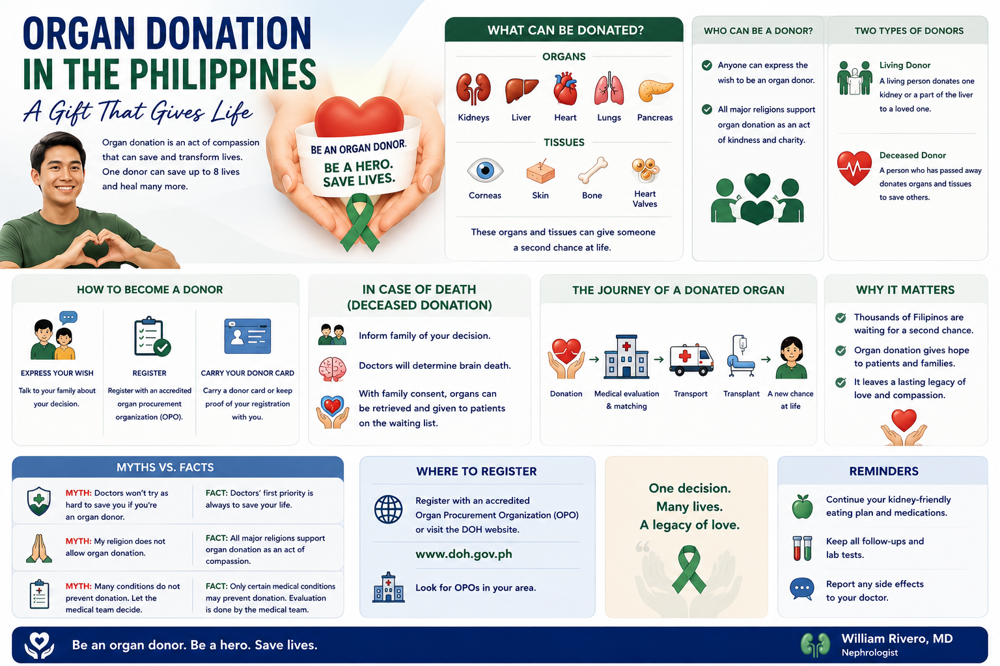

The Philippine Organ Donation Crisis in Numbers Ang Krisis ng Organ Donation sa Pilipinas sa mga Numero Ang Krisis sa Organ Donation sa Pilipinas sa mga Numero Ing Krisis ning Organ Donation king Pilipinas king Deng Numero
The Philippines is in an organ donation crisis — and it is entirely preventable. In 2019, the Philippines recorded a deceased organ donation rate of just 0.087 donors per million population. Spain, which adopted a proactive donation system, achieves 48.9 donors per million. That is a 560-fold difference. Meanwhile, over 64,000 Filipinos are on maintenance dialysis. Kidney transplantation — which offers the best quality of life, the best survival, and ultimately the lowest cost of treatment — remains out of reach for most of them. Not because no surgeons can do it. Not because hospitals are not ready. Because there are not enough donated kidneys. The only solution is more Filipinos choosing to donate. Ang Pilipinas ay nasa krisis ng organ donation — at ito ay ganap na maiiwasan. Noong 2019, ang Pilipinas ay nagtatala ng deceased organ donation rate na 0.087 donors bawat milyong populasyon. Ang Espanya, na nagpalit sa isang proactive na sistema ng donation, ay nakakamit ng 48.9 donors bawat milyon. Iyon ay isang 560-beses na pagkakaiba. Samantala, mahigit 64,000 Pilipino ang nasa maintenance dialysis. Ang Pilipinas anaa sa krisis sa organ donation — ug kini hingpit nga mapugngan. Niadtong 2019, ang Pilipinas nagrehistro sa deceased organ donation rate nga 0.087 donors matag milyong populasyon. Ang Espanya, nga nagbalhin sa usa ka proactive nga sistema sa donation, nakaabot sa 48.9 donors matag milyon. Kana 560-ka-beses nga kalainan. Samtang, labaw sa 64,000 Pilipino anaa sa maintenance dialysis. Ing Pilipinas nasa krisis ning organ donation — at iti ganap maiiwasan. Noong 2019, ing Pilipinas nagtatala ning deceased organ donation rate na 0.087 donors bawat milyong populasyon. Ing Espanya, a nagpalit king isang proactive a sistema ning donation, nakakamit ning 48.9 donors bawat milyon. Iti isang 560-beses a pagkakaiba. Samantala, mahigit 64,000 Pilipino nasa maintenance dialysis.
How the Philippines Compares (Deceased Donors per Million Population) Paano ang Pagkukumpara ng Pilipinas (Deceased Donors bawat Milyong Populasyon) Giunsa ang Pagkumpara sa Pilipinas (Deceased Donors matag Milyong Populasyon) Panung Nagkukumpara ing Pilipinas (Deceased Donors bawat Milyong Populasyon)
Sources: IRODaT 2019 data; Acta Med Philipp 2025; Transplant International 2023. pmp = per million population. Pinagkukunan: IRODaT 2019 data; Acta Med Philipp 2025; Transplant International 2023. pmp = bawat milyong populasyon. Mga tinubdan: IRODaT 2019 data; Acta Med Philipp 2025; Transplant International 2023. pmp = matag milyong populasyon. Pinagkukunan: IRODaT 2019 data; Acta Med Philipp 2025; Transplant International 2023. pmp = bawat milyong populasyon.
🏆 A Landmark Win: The Philippine College of Physicians Declares Full Support 🏆 Isang Makasaysayang Tagumpay: Inihayag ng Philippine College of Physicians ang Buong Suporta 🏆 Usa ka Makasaysayan nga Kadaugan: Nagpahayag ang Philippine College of Physicians sa Buong Suporta 🏆 Isang Makasaysayang Tagumpay: Inihayag ning Philippine College of Physicians ing Buong Suporta
🏆 PCP Official Declaration of Support for Organ DonationOpisyal na Deklarasyon ng Suporta ng PCP para sa Organ DonationOpisyal nga Deklarasyon sa Suporta sa PCP alang sa Organ DonationOpisyal a Deklarasyon ning Suporta ning PCP para king Organ Donation
Shared from the post of Dr. Maria Theresa Bad-Ang, with gratitude Ibinabahagi mula sa post ni Dr. Maria Theresa Bad-Ang, nang may pasasalamat Gibahin gikan sa post ni Dr. Maria Theresa Bad-Ang, uban sa pagpasalamat Ibinabahagi mula king post ni Dr. Maria Theresa Bad-Ang, nang maki pasasalamat
“A BIG WIN FOR ORGAN DONATION” as the Philippine College of Physicians (PCP), led by President Dr. Nemencio Nicodemus Jr. and its Board of Regents, officially declared its full support for organ donation advocacy. This milestone moment happened during the AG Sison Memorial Lecture, featuring Dr. Benita Padilla and Dr. Dominique Martin discussing the urgent need for organ donation in the Philippines. Organ and kidney donation has long been identified as one of the key bottlenecks of kidney transplantation in our country. “ISANG MALAKING TAGUMPAY PARA SA ORGAN DONATION” habang ang Philippine College of Physicians (PCP), sa ilalim ng pamumuno ni Presidente Dr. Nemencio Nicodemus Jr. at ng Lupon ng Regente nito, ay opisyal na nagdeklara ng buong suporta sa organ donation advocacy. Ang makasaysayang sandaling ito ay naganap sa panahon ng AG Sison Memorial Lecture, na nagtatampok kay Dr. Benita Padilla at Dr. Dominique Martin na nagtalakay ng agarang pangangailangan para sa organ donation sa Pilipinas. “USA KA DAKONG KADAUGAN ALANG SA ORGAN DONATION” samtang ang Philippine College of Physicians (PCP), ubos sa pamunoan ni Presidente Dr. Nemencio Nicodemus Jr. ug sa iyang Board of Regents, opisyal nga nagdeklara sa buong suporta alang sa organ donation advocacy. Kining makasaysayang sandaling nahitabo atol sa AG Sison Memorial Lecture, nga nagtagana kang Dr. Benita Padilla ug Dr. Dominique Martin nga nagdiskusyon sa dinalian nga pangangailangan alang sa organ donation sa Pilipinas. “ISANG MALAKING TAGUMPAY PARA KING ORGAN DONATION” habang ing Philippine College of Physicians (PCP), sa ilalim ning pamumuno ni Presidente Dr. Nemencio Nicodemus Jr. at ning Board of Regents niti, opisyal nagdeklara ning buong suporta king organ donation advocacy. Iting makasaysayang sandali nangyari sa panahon ning AG Sison Memorial Lecture, na nagtatampok king Dr. Benita Padilla at Dr. Dominique Martin a nagtalakay ning agarang pangangailangan para king organ donation king Pilipinas.
This declaration is significant because the PCP is the umbrella organization of all internists in the Philippines — the physicians who manage the vast majority of patients with chronic kidney disease, heart failure, liver disease, and other end-stage organ conditions that require transplantation. When the PCP as a body declares official support, it signals that the full weight of Philippine internal medicine is now behind this advocacy. This is expected to influence hospital policies, patient counseling practices, and legislative priorities on organ donation across the country. Ang deklarasyong ito ay mahalaga dahil ang PCP ay ang umbrella organization ng lahat ng mga internist sa Pilipinas — ang mga manggagamot na namamahala sa karamihan ng mga pasyenteng may talamak na sakit sa bato, heart failure, sakit sa atay, at iba pang end-stage organ conditions na nangangailangan ng transplantasyon. Kapag ang PCP bilang isang katawan ay nagdeklara ng opisyal na suporta, isinasalang nito na ang buong lakas ng Philippine internal medicine ay sumusuporta na sa advocacy na ito. Kining deklarasyon hinungdanon tungod ang PCP mao ang umbrella organization sa tanan nga mga internist sa Pilipinas — ang mga doktor nga nagdumala sa kadaghanan sa mga pasyente nga adunay kronikong sakit sa kidney, heart failure, sakit sa atay, ug uban pang end-stage organ conditions nga nagkinahanglan sa transplantasyon. Kon ang PCP isip usa ka katawan nagdeklara sa opisyal nga suporta, nagpadala kini nga ang tibuok gahum sa Philippine internal medicine karon nagsuporta niining advocacy. Iting deklarasyon mahalaga dahil ing PCP ing umbrella organization ning sablang deng internist king Pilipinas — deng manggagamot a namamahala king karamihan ning deng pasyenteng maki talamak a sakit king batu, heart failure, sakit king atay, at iba pang end-stage organ conditions a nangangailangan ning transplantasyon. Kapag ing PCP bilang isang katawan nagdeklara ning opisyal a suporta, isinasalang niti na ing buong lakas ning Philippine internal medicine sumusuporta na king advocacy na iti.
Why physician endorsement mattersBakit mahalaga ang endorsement ng mga manggagamotNgano nga hinungdanon ang endorsement sa mga doktorBakit mahalaga ing endorsement ning deng manggagamot
Studies show that a healthcare professional’s willingness to donate their own organs is strongly correlated with their likelihood to approach donor families and request consent. It is estimated that up to 20% of potential donors are lost because of a negative attitude from healthcare workers. The PCP declaration changes the conversation inside hospitals — where the most critical decisions about organ donation are made, in the ICU, in the emergency department, and at the bedside. Nagpapakita ang mga pag-aaral na ang kagustuhan ng isang propesyonal sa kalusugan na i-donate ang kanilang sariling mga organ ay malakas na nauugnay sa kanilang posibilidad na lapitan ang mga pamilyang nagbibigay-daan sa donation. Tinatayang hanggang 20% ng mga potensyal na donor ang nawawala dahil sa negatibong saloobin mula sa mga manggagawa sa kalusugan. Nagpakita ang mga pag-aaral nga ang kaandam sa usa ka propesyonal sa kalusugan sa pagdonar sa ilang kaugalingon nga mga organ kusog nga nalangkit sa ilang posibilidad sa pagduol sa mga pamilya sa donor ug paghangyo sa pagtugot. Gibanabana nga hangtod sa 20% sa mga potensyal nga donor nawala tungod sa negatibong saloobin gikan sa mga mamumuhag sa kalusugan. Nagpapakita deng pag-aaral na ing kagustuhan ning isang propesyonal king kalusugan na i-donate deng sarili nilang deng organ kusog nauugnay king posibilidad nila na lapitan deng pamilyang nagbibigay-daan king donation. Tinatayang hanggang 20% ning deng potensyal a donor nawawala dahil king negatibong saloobin mula king deng manggagawa king kalusugan.
One Donor Can Save Up to 8 Lives — and Heal Many More Isang Donor ay Maaaring Makatipid ng Hanggang 8 Buhay — at Makapagpagaling ng Marami Pa Usa ka Donor Makamugna sa Pagluwas sa Hangtod 8 ka Kinabuhi — ug Makaayo sa Daghang Pa Metung a Donor Maaaring Makatipid ning Hanggang 8 Buhay — at Makapagpagaling ning Marami Pa

A single deceased donor can potentially donate multiple organs and tissues. Under Philippine law (R.A. 7170), the following can be donated: Ang isang deceased donor ay potensyal na makapag-donate ng maraming organ at tissue. Sa ilalim ng batas ng Pilipinas (R.A. 7170), ang mga sumusunod ay maaaring i-donate: Usa ka deceased donor potensyal nga makadonar sa daghang organ ug tissue. Sa ilalim sa balaod sa Pilipinas (R.A. 7170), ang mosunod mahimong idonar: Metung a deceased donor potensyal makadonar ning daramihang organ at tissue. Sa ilalim ning batas ning Pilipinas (R.A. 7170), deng sumusunod maaaring i-donate:
🧉 Kidneys (2)Bato (2)Kidney (2)Batu (2)
Each donated kidney can give a dialysis patient years of dialysis-free life. Two recipients benefit from one donor. This is the most critical shortage in the Philippines.Ang bawat donated na bato ay maaaring magbigay ng mga taon ng buhay na walang dialysis sa isang pasyente ng dialysis. Dalawang tatanggap ang makikinabang mula sa isang donor.Ang matag donated nga kidney mahimong maghatag sa usa ka pasyente sa dialysis sa mga tuig nga kinabuhi nga walay dialysis. Duha ka mga tatanggap ang makabenepisyo gikan sa usa ka donor.Bawat donated a batu maaaring magbigay king isang pasyente ning dialysis ning deng taon ning buhay a wala pang dialysis. Adwang tatanggap ang makikinabang mula king metung a donor.
❤ HeartPusoKasingkasingPuso
For patients with end-stage heart failure who cannot survive without a transplant. Time-critical — must be transplanted within 4–6 hours of donation.Para sa mga pasyente na may end-stage heart failure. Sensitibo sa oras — dapat i-transplant sa loob ng 4–6 oras mula sa donation.Alang sa mga pasyente nga adunay end-stage heart failure. Sensitibo sa oras — kinahanglan i-transplant sulod sa 4–6 ka oras gikan sa donation.Para king deng pasyente a maki end-stage heart failure. Sensitibo king oras — dapat i-transplant king loob ning 4–6 oras mula king donation.
🎁 LiverAtayAtayAtay
For patients with end-stage liver disease, acute liver failure, or metabolic disorders. Only 59 liver transplants have been performed in the Philippines since 1988, despite 5,000 annual deaths from cirrhosis.Para sa mga pasyente na may end-stage liver disease. Tanging 59 lamang na liver transplant ang naisagawa sa Pilipinas mula 1988, sa kabila ng 5,000 na taunang kamatayan mula sa cirrhosis.Alang sa mga pasyente nga adunay end-stage liver disease. Dosena lamang ka liver transplant ang nainisagawa sa Pilipinas sukad 1988, bisan adunay 5,000 ka taunang kamatayon gikan sa cirrhosis.Para king deng pasyente a maki end-stage liver disease. Tanging 59 lamang a liver transplant ing naisagawa king Pilipinas mula 1988, sa kabila ning 5,000 a taunang kamatayan mula king cirrhosis.
🌈 Lungs (2)Baga (2)Baga (2)Deng Baga (2)
For patients with end-stage pulmonary fibrosis, COPD, or other severe irreversible lung diseases. Very limited availability in the Philippines.Para sa mga pasyente na may end-stage pulmonary fibrosis o COPD. Napaka-limitado ang availability sa Pilipinas.Alang sa mga pasyente nga adunay end-stage pulmonary fibrosis o COPD. Grabe ka limitado ang availability sa Pilipinas.Para king deng pasyente a maki end-stage pulmonary fibrosis o COPD. Napaka-limitadong availability king Pilipinas.
👁 Corneas (Eyes)Kornea (Mata)Kornea (Mata)Kornea (Mata)
Cornea donation restores sight to patients with corneal blindness. Among the most accessible and highest-need donations in the Philippines. Both corneas can help two separate recipients.Ang cornea donation ay nagpapanumbalik ng paningin sa mga pasyenteng may corneal blindness. Isa sa pinaka-accessible at pinaka-kailangan ng donation sa Pilipinas.Ang cornea donation nagbalik sa panan-aw sa mga pasyente nga adunay corneal blindness. Usa sa pinakaaccess ug pinakakinahanglan nga donation sa Pilipinas.Ing cornea donation nagpapanumbalik ning paningin king deng pasyente a maki corneal blindness. Metung sa pinaka-accessible at pinaka-kailangan a donation king Pilipinas.
🧣 Bones, Skin, Blood VesselsButo, Balat, Daluyan ng DugoBukog, Panit, Daluyan sa DugoButo, Balat, Daluyan ning Dala
Tissue donations help burn victims, cancer patients, and those with bone defects. Less time-critical than solid organs. A single tissue donor can benefit up to 75 people.Ang mga tissue donation ay tumutulong sa mga biktima ng sunog, mga pasyente ng kanser, at mga may defect sa buto. Hindi gaanong sensitibo sa oras kaysa sa mga solid organ. Isang tissue donor ay maaaring makinabang ang hanggang 75 tao.Ang mga tissue donation nagtabang sa mga biktima sa sunog, mga pasyente sa kanser, ug mga adunay defect sa bukog. Dili kaayo sensitibo sa oras kaysa sa mga solid organ. Usa ka tissue donor makabenepisyo sa hangtod 75 ka tawo.Deng tissue donation nakakatulong king deng biktima ning sunog, deng pasyente ning kanser, at deng may defect king buto. Hindi gaanong sensitibo king oras kaysa king deng solid organ. Metung a tissue donor maaaring makinabang ang hanggang 75 tao.
Philippine Law on Organ Donation Batas ng Pilipinas sa Organ Donation Balaod sa Pilipinas sa Organ Donation Batas ning Pilipinas king Organ Donation
R.A. 7170 — The Organ Donation Act of 1991R.A. 7170 — Ang Organ Donation Act ng 1991R.A. 7170 — Ang Organ Donation Act sa 1991R.A. 7170 — Ing Organ Donation Act ning 1991
The primary law governing organ donation in the Philippines. Any Filipino 18 years or older, of sound mind, may donate all or part of their body after death. The donation can be executed via a signed card, a will, or any written document witnessed by two people. The donor may also designate which organs to donate. Ang pangunahing batas na namamahala ng organ donation sa Pilipinas. Anumang Pilipinong may 18 taon pataas, malusog ang isip, ay maaaring mag-donate ng lahat o bahagi ng kanilang katawan pagkatapos ng kamatayan. Ang donation ay maaaring isagawa sa pamamagitan ng isang signed card, isang testamento, o anumang nakasulat na dokumento na may dalawang saksi. Ang pangunahing balaod nga nagdumala sa organ donation sa Pilipinas. Bisan unsang Pilipino nga adunay 18 ka tuig pataas, himsog ang pangisip, mahimong magdonar sa tanan o bahin sa ilang lawas pagkahuman sa kamatayon. Ang donation mahimong isagawa pinaagi sa usa ka signed card, usa ka testamento, o bisan unsang sinulat nga dokumento nga adunay duha ka saksi. Ing pangunahing batas a namamahala ning organ donation king Pilipinas. Aninumang Pilipinong maki 18 taon pataas, malusog ing isip, maaaring magdonar ning sablang o bahagi ning katawan nila pagkatapos ning kamatayan. Ing donation maaaring isagawa sa pamamagitan ning isang signed card, isang testamento, o aninumang nakasulat a dokumento a maki adwang saksi.
PhilNOS — Philippine Network for Organ SharingPhilNOS — Philippine Network for Organ SharingPhilNOS — Philippine Network for Organ SharingPhilNOS — Philippine Network for Organ Sharing
Established by the DOH in 2010, PhilNOS is the central coordinating body for organ procurement and allocation. It manages the national transplant candidate waiting list (PODRRS), coordinates with DOH-accredited transplant centers and organ procurement organizations (OPOs), and ensures fair allocation based on medical scoring. There are currently 28 DOH-accredited transplant facilities in the Philippines. Itinatag ng DOH noong 2010, ang PhilNOS ang sentral na katawan ng koordinasyon para sa organ procurement at allocation. Pinamamahalaan nito ang pambansang listahan ng pag-aabang ng transplant candidate (PODRRS) at tinitiyak ang patas na allocation batay sa medical scoring. Kasalukuyang may 28 transplant facility na accredited ng DOH sa Pilipinas. Gitukod sa DOH niadtong 2010, ang PhilNOS mao ang sentral nga koordinasyon nga katawan alang sa organ procurement ug allocation. Nagdumala kini sa nasudnong listahan sa pag-abot sa transplant candidate (PODRRS) ug nagtino sa patas nga allocation base sa medical scoring. Karon adunay 28 transplant facility nga accredited sa DOH sa Pilipinas. Itinatag ning DOH noong 2010, ing PhilNOS ing sentral a katawan ning koordinasyon para king organ procurement at allocation. Pinamamahalaan niti ing pambansang listahan ning pag-aabang ning transplant candidate (PODRRS) at tinitiyak ing patas a allocation batay king medical scoring. Kasalukuyang maki 28 transplant facility a accredited ning DOH king Pilipinas.
HB 2025 Pending — Possible Opt-Out SystemHB 2025 Nakabinbin — Posibleng Opt-Out SystemHB 2025 Naghulat — Posible nga Opt-Out SystemHB 2025 Nakabinbin — Posibleng Opt-Out System
House Bill No. 2517 (Organ Donation Act of 2025), introduced by Rep. Giselle Maceda, and a companion Senate Bill introduced by former Sen. Richard Gordon, propose establishing an opt-out system — where every Filipino is presumed to consent to organ donation unless they explicitly register their objection. Spain’s opt-out system achieved a 560-fold higher donation rate than the Philippines. Belgium saw donations rise from 10.9 to 41.3 per million within 3 years of adopting opt-out. This legislation, if passed, could transform the Philippine organ donation landscape. Ang House Bill No. 2517 (Organ Donation Act of 2025), ay nagmumungkahi ng pagtatayo ng isang opt-out system — kung saan bawat Pilipino ay ipinapalagay na pumayag sa organ donation maliban kung malinaw nilang irerehistro ang kanilang pagtanggi. Ang opt-out system ng Espanya ay nakamit ng 560-beses na mas mataas na donation rate kaysa sa Pilipinas. Ang House Bill No. 2517 (Organ Donation Act of 2025) nagsugyot sa pagtukod sa usa ka opt-out system — diin ang matag Pilipino gipalagay nga nagtugot sa organ donation gawas kon dayag nilang irehistro ang ilang pagsalikway. Ang opt-out system sa Espanya nakaabot sa 560-beses nga mas taas nga donation rate kaysa sa Pilipinas. Ing House Bill No. 2517 (Organ Donation Act of 2025) nagmumungkahi ning pagtatayo ning isang opt-out system — kung nanu bawat Pilipino ipinapalagay na pumayag king organ donation maliban kung malinaw nilang irerehistro ing pagtanggi nila. Ing opt-out system ning Espanya nakamit ning 560-beses a mas mataas a donation rate kaysa king Pilipinas.
The Myths That Are Costing Filipino Lives Ang mga Maling Akala na Nagkakahalaga ng Buhay ng mga Pilipino Ang mga Mito nga Nagkagasto sa mga Kinabuhi sa Pilipino Deng Maling Akala a Nagkakahalaga ning Buhay ning Deng Pilipino
How to Register as an Organ Donor in the Philippines Paano Mag-rehistro bilang Organ Donor sa Pilipinas Giunsa Magparehistro isip Organ Donor sa Pilipinas Panung Magparehistro bilang Organ Donor king Pilipinas
Decide what you want to donateMagdesisyon kung ano ang gusto mong i-donateMagdesisyon kon unsa ang imong gusto nga idonarMagdesisyon kung nanung gusto mong i-donate
You can donate all organs and tissues, or specify particular ones (e.g., kidneys only, or corneas only). You may also indicate exclusions. Under R.A. 7170, you have full control over what you designate.Maaari kang mag-donate ng lahat ng organ at tissue, o tukuyin ang mga partikular (hal. bato lamang, o cornea lamang). Maaari mo ring ipahiwatig ang mga exclusion. Sa ilalim ng R.A. 7170, mayroon kang buong kontrol sa kung ano ang iyong itatalaga.Mahimo kang magdonar sa tanan nga organ ug tissue, o tukuyon ang mga partikular (ex. kidney lamang, o cornea lamang). Mahimo usab kang moindika sa mga exclusion. Sa ilalim sa R.A. 7170, aduna kang hingpit nga kontrol sa kung unsa ang imong itatalaga.Maaari kang magdonar ning sablang organ at tissue, o tukuyin deng partikular (hal. batu lamang, o cornea lamang). Maaari ka ring magpahiwatig ning deng exclusion. Sa ilalim ning R.A. 7170, meron kang buong kontrol king kung nanung iyong itatalaga.
Get an organ donor cardKumuha ng organ donor cardMakakuha og organ donor cardMakakuha ning organ donor card
Donor cards are available at: the National Kidney and Transplant Institute (NKTI) in Quezon City; the Kidney Foundation of the Philippines (KFP); any DOH-accredited transplant center; the HOPE program of the Philippine Society of Nephrology; and through the REGALO Organ Donation Advocacy. Fill it out, sign it, and have two witnesses sign it as well.Ang mga donor card ay makukuha sa: National Kidney and Transplant Institute (NKTI) sa Quezon City; ang Kidney Foundation of the Philippines (KFP); anumang DOH-accredited transplant center; ang HOPE program ng Philippine Society of Nephrology; at sa pamamagitan ng REGALO Organ Donation Advocacy. Punan ito, pirmahan, at papirmahan ang dalawang saksi.Ang mga donor card makuha sa: National Kidney and Transplant Institute (NKTI) sa Quezon City; ang Kidney Foundation of the Philippines (KFP); bisan unsang DOH-accredited transplant center; ang HOPE program sa Philippine Society of Nephrology; ug pinaagi sa REGALO Organ Donation Advocacy.Deng donor card makukuha king: National Kidney and Transplant Institute (NKTI) king Quezon City; ing Kidney Foundation of the Philippines (KFP); aninumang DOH-accredited transplant center; ing HOPE program ning Philippine Society of Nephrology; at sa pamamagitan ning REGALO Organ Donation Advocacy.
Carry the card and inform your familyDalhin ang card at ipaalam sa iyong pamilyaDad-on ang card ug ipahibalo sa imong pamilyaDalhin ing card at ipaalam king pamilya mo
Keep your signed donor card in your wallet or with your personal identification. More importantly: tell your family about your decision and why you made it. When a family already knows and has discussed a loved one’s wish to donate, the time-critical consent process is dramatically faster — which can mean the difference between usable and unusable organs.Panatilihing nasa iyong pitaka o kasama ng iyong personal na pagkakakilanlan ang iyong signed donor card. Mas mahalaga: ipaalam sa iyong pamilya ang tungkol sa iyong desisyon at kung bakit mo ginawa ito. Kapag alam na ng pamilya at tinalakay na ang kagustuhan ng isang mahal sa buhay na mag-donate, ang proseso ng pagbibigay ng pahintulot na sensitibo sa oras ay mas mabilis.Tipigan ang imong signed donor card sa imong pitaka o kauban ang imong personal nga pagpakaila. Mas hinungdanon: ipahibalo sa imong pamilya bahin sa imong desisyon ug ngano nimong gihimo kini. Kon nahibal-an na sa pamilya ug gidiskusyon na ang gusto sa usa ka gimahal sa kinabuhi nga magdonar, ang proseso sa pagtugot nga sensitibo sa oras mas paspas.Ipaalam king pamilya mo ang tungkol king desisyon mo at kung bakit mo iti ginawa. Kapag alam na ning pamilya at tinalakay na ing kagustuhan ning isang mahal king buhay na magdonar, ing proseso ning pagbibigay ning pahintulot a sensitibo king oras mas mabilis.
Optional: Indicate it in your driver’s licenseOpsyonal: Ipahiwatig ito sa iyong lisensya ng driverOpsyonal: Ipahiwatig kini sa imong lisensya sa pagmanehoOpsyonal: Ipahiwatig iti king lisensya mo ning driver
The Land Transportation Office (LTO) allows organ donor status to be indicated on Philippine driver’s licenses. Ask the LTO office when renewing your license. This ensures that even in an emergency, first responders and hospital staff can quickly identify your donor status.Pinapayagan ng Land Transportation Office (LTO) na ipahiwatig ang katayuan ng organ donor sa mga lisensya ng driver ng Pilipinas. Tanungin ang LTO office kapag inire-renew ang iyong lisensya. Tinitiyak nito na kahit sa isang emergency, ang mga first responder at hospital staff ay mabilis na makikilala ang iyong donor status.Gitugotan sa Land Transportation Office (LTO) nga ipahiwatig ang kahimtang sa organ donor sa mga lisensya sa pagmaneho sa Pilipinas. Pangutana ang LTO office kon nag-renew sa imong lisensya. Nagtino kini nga bisan sa usa ka emergency, ang mga first responder ug hospital staff mabilis nga makaila sa imong donor status.Pinapayagan ning Land Transportation Office (LTO) na ipahiwatig ing katayuan ning organ donor king deng lisensya ning driver ning Pilipinas. Tanungin ing LTO office kapag inire-renew ing lisensya mo. Tinitiyak niti na kahit king isang emergency, deng first responder at hospital staff mabilis makakilala ning donor status mo.
Register Today. It Takes 10 Minutes. It Can Save 8 Lives. Mag-rehistro Ngayon. Tumatagal ng 10 Minuto. Maaaring Makatipid ng 8 Buhay. Magparehistro Karon. Molungtad og 10 Minuto. Makamugna sa Pagluwas sa 8 ka Kinabuhi. Magparehistro Ngayon. Tumatagal ning 10 Minuto. Maaaring Makatipid ning 8 Buhay.
Contact any of these organizations to get your donor card and register: Makipag-ugnayan sa alinman sa mga organisasyong ito upang makuha ang iyong donor card at mag-rehistro: Makigkontak sa bisan unsang kining mga organisasyon aron makuha ang imong donor card ug magparehistro: Makipag-ugnayan king alinman sa keting deng organisasyon para makuha ing donor card mo at magparehistro:
NKTI
National Kidney and Transplant Institute · East Ave., Quezon City · (02) 8981-0300National Kidney and Transplant Institute · East Ave., Lungsod ng Quezon · (02) 8981-0300National Kidney and Transplant Institute · East Ave., Quezon City · (02) 8981-0300National Kidney and Transplant Institute · East Ave., Quezon City · (02) 8981-0300
PhilNOS
Philippine Network for Organ Sharing · DOH-managed national coordinator · facebook.com/philnos.dohPhilippine Network for Organ Sharing · DOH-managed national coordinator · facebook.com/philnos.dohPhilippine Network for Organ Sharing · DOH-managed national coordinator · facebook.com/philnos.dohPhilippine Network for Organ Sharing · DOH-managed national coordinator · facebook.com/philnos.doh
HOPE / PSN
Human Organ Preservation Effort · Philippine Society of Nephrology · psn.org.phHuman Organ Preservation Effort · Philippine Society of Nephrology · psn.org.phHuman Organ Preservation Effort · Philippine Society of Nephrology · psn.org.phHuman Organ Preservation Effort · Philippine Society of Nephrology · psn.org.ph
KFP / REGALO
Kidney Foundation of the Philippines · REGALO Advocacy · Contact your nearest DOH-accredited transplant centerKidney Foundation of the Philippines · REGALO Advocacy · Makipag-ugnayan sa pinakamalapit na DOH-accredited transplant centerKidney Foundation of the Philippines · REGALO Advocacy · Makigkontak sa imong pinakaduol nga DOH-accredited transplant centerKidney Foundation of the Philippines · REGALO Advocacy · Makipag-ugnayan king pinakamatawid a DOH-accredited transplant center
If a Family Member Dies — What Happens and What You Decide Kung Namatay ang Isang Miyembro ng Pamilya — Ano ang Nangyayari at Ano ang Iyong Pagpapasya Kon Namatay ang Usa ka Miyembro sa Pamilya — Unsa ang Mahitabo ug Unsa ang Imong Pagdesisyon Kung Namatay ing Isang Miyembro ning Pamilya — Nanung Nangyayari at Nanung Iyong Pagpapasya
Most organ donation from deceased donors happens in two situations: brain death (the brain is irreversibly dead, but the heart continues beating with mechanical support) and donation after circulatory death. If your loved one is in this situation, a trained hospital coordinator or transplant coordinator may approach the family. This is not a forced conversation — the decision is entirely the family’s. Karamihan ng organ donation mula sa deceased donor ay nangyayari sa dalawang sitwasyon: brain death (ang utak ay hindi na mababawi, ngunit ang puso ay patuloy na tumitibok nang may tulong ng makina) at donation pagkatapos ng circulatory death. Kung ang iyong mahal sa buhay ay nasa sitwasyong ito, isang sinanay na hospital coordinator o transplant coordinator ay maaaring lumapit sa pamilya. Ito ay hindi isang sapilitang pag-uusap — ang desisyon ay ganap sa pamilya. Kadaghanan sa organ donation gikan sa deceased donor mahitabo sa duha ka sitwasyon: brain death (ang utok hingpit nga patay na, apan ang kasingkasing padayon nga nagbunal uban sa suporta sa makina) ug donation pagkahuman sa circulatory death. Kon ang imong gimahal sa kinabuhi anaa niining sitwasyon, usa ka bansay nga hospital coordinator o transplant coordinator mahimong moduol sa pamilya. Kini dili usa ka pinilit nga pag-istoryahanay — ang desisyon hingpit sa pamilya. Karamihan ning organ donation mula king deceased donor nangyayari king adwang sitwasyon: brain death (ing utak hindi na mababawi, ngunit ing puso patuloy na tumitibok nang maki tulong ning makina) at donation pagkatapos ning circulatory death. Kung ing mahal mo king buhay nasa sitwasyong iti, isang sinanay a hospital coordinator o transplant coordinator maaaring lumapit king pamilya. Iti hindi isang sapilitang pag-uusap — ing desisyon ganap sa pamilya.
What brain death meansAno ang ibig sabihin ng brain deathUnsa ang gipasabot sa brain deathNanung kahulugan ning brain death
Under Philippine law, brain death is the legal and medical definition of death. It is certified by two independent physicians who are not part of the transplant team. A patient who is brain dead cannot recover — the brain has ceased all function permanently. The heart may continue beating only because of a mechanical ventilator. Families must understand: a brain-dead patient is already dead. The ventilator is supporting the heart only, not the person. Sa ilalim ng batas ng Pilipinas, ang brain death ay ang legal at medikal na kahulugan ng kamatayan. Ito ay pinatunayan ng dalawang independyenteng manggagamot na hindi bahagi ng transplant team. Ang isang pasyenteng brain dead ay hindi na maaaring gumaling — ang utak ay tumigil na sa lahat ng gawain nang permanente. Sa ilalim sa balaod sa Pilipinas, ang brain death mao ang legal ug medikal nga kahulugan sa kamatayon. Kini gipamatuod sa duha ka independyenteng mga doktor nga dili bahin sa transplant team. Ang usa ka pasyente nga brain dead dili na maayo — ang utok naghunong na sa tanan nga gawi nang permanente. Sa ilalim ning batas ning Pilipinas, ing brain death ing legal at medikal a kahulugan ning kamatayan. Iti pinatunayan ning adwang independyenteng manggagamot a hindi bahagi ning transplant team. Isang pasyente a brain dead hindi na maaaring gumaling — ing utak tumigil na king sablang gawain nang permanente.
The gift of meaning in griefAng regalo ng kahulugan sa pagdadalamhatiAng gasa sa kahulogan sa pagsuboIng regalo ning kahulugan king pagdadalamhati
Families who have consented to donation consistently report that it brought profound comfort in their grief — knowing that their loved one’s death gave life and sight and a future to others. One Filipino nephrologist described it as “the last act of love.” This does not make the grief smaller. But it gives it purpose. No family should be pressured — but many wish, afterward, that they had known to say yes. Ang mga pamilyang pumayag sa donation ay patuloy na nag-uulat na nagbigay ito ng malalim na kaginhawahan sa kanilang pagdadalamhati — alam na ang kamatayan ng kanilang mahal sa buhay ay nagbigay ng buhay at paningin at kinabukasan sa iba. Ito ay hindi nagpapalaki ng kalungkutan. Ngunit nagbibigay ito ng layunin. Ang mga pamilya nga nagtugot sa donation padayon nagreport nga naghatag kini sa lawom nga kaginhawahan sa ilang pagsubo — nasayran nga ang kamatayon sa ilang gimahal sa kinabuhi naghatag sa kinabuhi ug panan-aw ug kaugmaon sa uban. Kini wala nagpalaksi sa kasub-anan. Apan naghatag niini sa katuyoan.Deng pamilya a pumayag king donation patuloy nagreport na nagbigay iti ning malalim a kaginhawahan king pagdadalamhati nila — alam na ing kamatayan ning mahal nila king buhay nagbigay ning buhay at paningin at kinabukasan king iba. Iti hindi nagpapalaki ning kalungkutan. Ngunit nagbibigay niti ning layunin.
The Kidney Transplant Bottleneck — Why Donation Is the Answer Ang Bottleneck ng Kidney Transplant — Bakit Ang Donation ang Sagot Ang Bottleneck sa Kidney Transplant — Ngano nga ang Donation ang Tubag Ing Bottleneck ning Kidney Transplant — Bakit Ing Donation ing Sagot
Kidney transplantation is unambiguously the best treatment for end-stage kidney disease. A successful transplant eliminates the need for dialysis, dramatically improves quality of life, provides the highest long-term survival, and is ultimately less expensive than years of dialysis. Despite this, only 3.4% of eligible Filipino ESKD patients ever received a kidney transplant (2015 data). The reason is almost entirely organ supply. More than 90% of kidney transplants in the Philippines use living donors (usually family members). Deceased-donor transplants remain extremely rare — because the conversation about deceased donation is almost never happening. Ang kidney transplantation ay walang duda ang pinakamahusay na paggamot para sa end-stage kidney disease. Ang isang matagumpay na transplant ay nag-aalis ng pangangailangan para sa dialysis, lubos na nagpapabuti ng kalidad ng buhay, nagbibigay ng pinakamataas na pangmatagalang kaligtasan, at sa huli ay mas mura kaysa sa mga taon ng dialysis. Sa kabila nito, 3.4% lamang ng mga kwalipikadong Pilipinong pasyente ng ESKD ang nakatanggap ng kidney transplant (2015 data). Ang dahilan ay halos ganap na supply ng organ. Ang kidney transplantation walay duda ang pinakamayong pagtambal alang sa end-stage kidney disease. Ang usa ka matagumpay nga transplant nagwagtang sa pangangailangan alang sa dialysis, grabe nagpauswag sa kalidad sa kinabuhi, naghatag sa pinakataas nga dugay nga pagsurvive, ug sa katapusan mas barato kaysa sa mga tuig sa dialysis. Bisan sa niini, 3.4% lamang sa mga kwalipikadong Pilipinong pasyente sa ESKD nakatanggap sa kidney transplant (2015 data). Ang hinungdan halos hingpit nga suplay sa organ. Ing kidney transplantation walay duda ing pinaka-maayus a paggamot para king end-stage kidney disease. Isang matagumpay a transplant nag-aalis ning pangangailangan para king dialysis, lubos nagpapabuti ning kalidad ning buhay, nagbibigay ning pinakamataas a pangmatagalang kaligtasan, at sa huli mas mura kaysa king deng taon ning dialysis. Sa kabila niti, 3.4% lamang ning deng kwalipikadong Pilipinong pasyente ning ESKD nakatanggap ning kidney transplant (2015 data). Ing dahilan halos ganap a supply ning organ.
If you are on dialysis and interested in a kidney transplantKung nasa dialysis ka at interesado sa isang kidney transplantKon anaa ka sa dialysis ug interesado sa usa ka kidney transplantKung nasa dialysis ka at interesado king isang kidney transplant
- Ask your nephrologist to refer you to a DOH-accredited transplant center for evaluationHilingin sa iyong nephrologist na i-refer ka sa isang DOH-accredited transplant center para sa pagsusuriPangayoa sa imong nephrologist nga i-refer ka sa usa ka DOH-accredited transplant center alang sa pagsusiHilingin king nephrologist mo na i-refer ka king isang DOH-accredited transplant center para king pagsusuri
- Enroll in the PODRRS waiting list through your transplant center to be considered for deceased-donor kidneysMag-enroll sa listahan ng paghihintay ng PODRRS sa pamamagitan ng iyong transplant center upang isaalang-alang para sa mga deceased-donor kidneyMag-enroll sa listahan sa paghulat sa PODRRS pinaagi sa imong transplant center aron ikonsiderar alang sa mga deceased-donor kidneyMag-enroll king listahan ning paghihintay ning PODRRS sa pamamagitan ning transplant center mo para isaalang-alang para king deng deceased-donor kidney
- Discuss living-related donation with your family — a healthy family member with a matching blood type may be eligible to donate one kidney to youTalakayin ang living-related donation sa iyong pamilya — isang malusog na miyembro ng pamilya na may katugmang blood type ay maaaring karapat-dapat na mag-donate ng isang bato sa iyoDiskusyonon ang living-related donation uban sa imong pamilya — ang usa ka himsog nga miyembro sa pamilya nga adunay katugmang blood type mahimong kwalipikado nga magdonar sa usa ka kidney kanimoTalakayin ing living-related donation king pamilya mo — isang malusog a miyembro ning pamilya a maki katugmang blood type maaaring karapat-dapat na magdonar ning isang batu king ika
- PhilHealth covers the cost of kidney transplantation — ask your transplant center about the Z Benefit package for transplant recipientsTinatakpan ng PhilHealth ang gastos ng kidney transplantation — tanungin ang iyong transplant center tungkol sa Z Benefit package para sa mga tatanggap ng transplantAng PhilHealth nagtabon sa gastos sa kidney transplantation — pangutana ang imong transplant center bahin sa Z Benefit package alang sa mga tatanggap sa transplantTinatakpan ning PhilHealth ing gastos ning kidney transplantation — tanungin ing transplant center mo tungkol king Z Benefit package para king deng tatanggap ning transplant

W. G. M. Rivero, MD, FPCP, DPSN
Specialist in Internal Medicine, Nephrology, and Clinical Nutrition. As a nephrologist in the Philippines, I see every week what the organ donation shortage costs. Patients on dialysis who could be living transplant lives if one family, years ago, had said yes. The PCP’s declaration of support in 2025 is a genuine turning point. But the real change happens in conversations — at kitchen tables, in church halls, in doctor’s offices. Tell your family what you want. Register today. One decision can give eight people back their lives. Espesyalista sa Panloob na Medisina, Nefrolohiya, at Klinikal na Nutrisyon. Bilang isang nephrologist sa Pilipinas, nakikita ko bawat linggo ang halaga ng kakulangan ng organ donation. Mga pasyente sa dialysis na maaaring nabubuhay na may transplant kung ang isang pamilya, matagal na, ay nagsabi ng oo. Ang deklarasyon ng PCP ng suporta noong 2025 ay isang tunay na turning point. Ngunit ang tunay na pagbabago ay nangyayari sa mga pag-uusap. Sabihin sa iyong pamilya kung ano ang gusto mo. Mag-rehistro ngayon. Espesyalista sa Internal nga Medisina, Nefrolohiya, ug Klinikal nga Nutrisyon. Isip usa ka nephrologist sa Pilipinas, nakita ko matag semana ang gasto sa kakulang sa organ donation. Mga pasyente sa dialysis nga unta nabuhi na adunay transplant kon ang usa ka pamilya, dugay na, nag-ingon og oo. Ang deklarasyon sa PCP sa suporta niadtong 2025 tinuod nga turning point. Apan ang tinuod nga pagbabago nahitabo sa mga pag-istoryahanay. Sultihi ang imong pamilya kon unsa ang imong gusto. Magparehistro karon. Espesyalista king Panloob a Medisina, Nefrolohiya, at Klinikal a Nutrisyon. Bilang isang nephrologist king Pilipinas, nakikita ku bawat linggu ing halaga ning kakulangan ning organ donation. Deng pasyente king dialysis a maaaring nabubuhay nang maki transplant kung isang pamilya, matagal na, nagsabi ning oo. Ing deklarasyon ning PCP ning suporta noong 2025 isang tunay a turning point. Ngunit ing tunay a pagbabago nangyayari king deng pag-uusap. Sabihin king pamilya mo kung nanung gusto mo. Magparehistro ngayon.
PRC 0105184 · seriousmd.com/doc/williamrivero ·